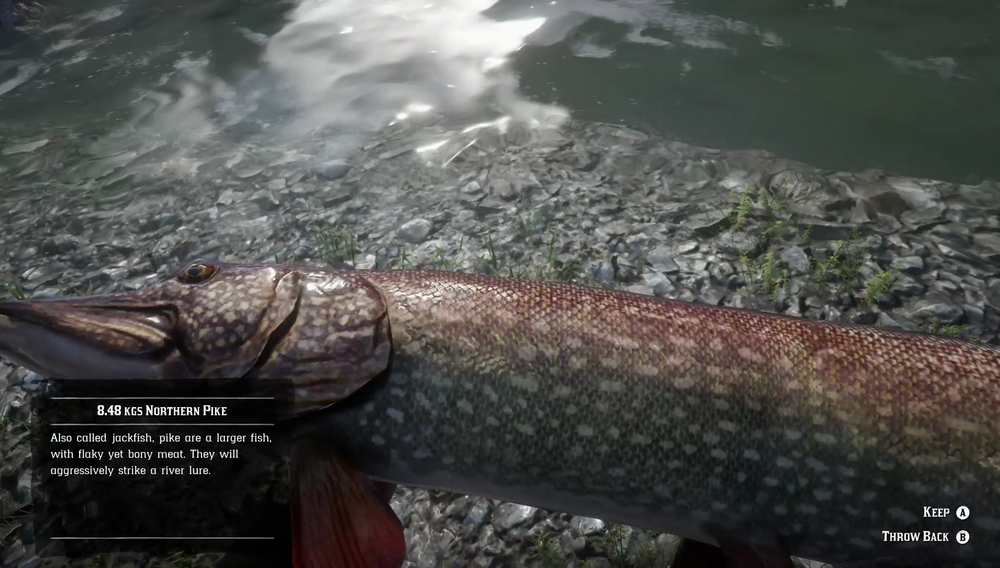

Northern Pike can be found in northern rivers. This large predator can prove tricky to catch, as it struggles fiercely when threatened. River Lures are known to catch the Northern Pike's eye, while food baits hold no appeal. They are most active when the skies are gray and overcast. A massive Legendary Northern Pike is supposed to exist, or have existed, somewhere in the Grizzlies.
Northern rivers.
